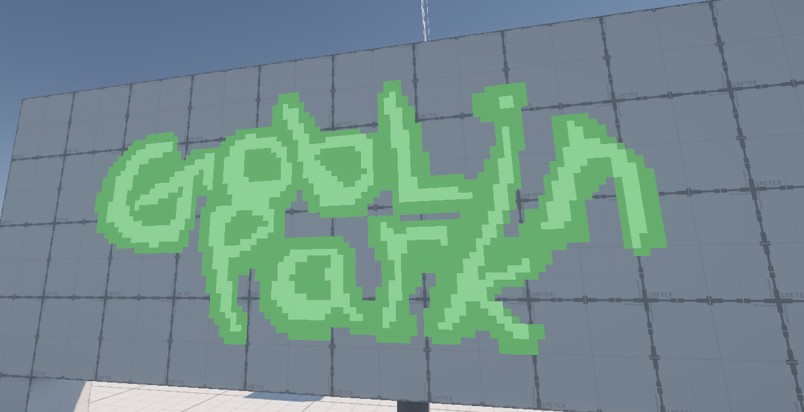

Goblin Game is a working title for a multiplayer project that my friend and I conceptualized in May of 2025. We began work on it as soon as we were both free from our last project. The core gameplay of Goblin Game is stab and grab. Players will run around and stab other goblins, causing them to lose coins in a very expensive explosion. These coins can then be picked up by other goblins either by colliding with them or using your magical jar vacuum. Goblins getting in your way? Hurl your jar at their head to knock them unconscious for a few moments! Gameplay will consist of a few rounds which then lead to an awards ceremony that gives different accolades to players (each equivalent to a point). These accolades will range from skill-based (Most stabs, most coins, etc.) to completely random (most wounds, most time spent knocked-out). This allows for players to diversify their gameplay as much as possible!
Goblin Game is working to improve my networking skills. A lot of tings have been challenging so far, namely dealing with player interactions over the network.
Features that are confirmed for Goblin Game: Proximity chat, Goblin customization, different maps with different layouts, lobbies of 8+.
Stay tuned!
Polariis
Co-Producer and Programmer
May 2025 -
Skills: Unity Networking, Peer-to-peer Architecture, Multiplayer Features, C#